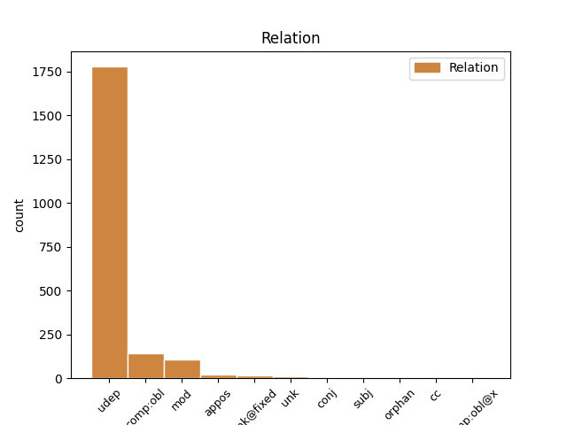
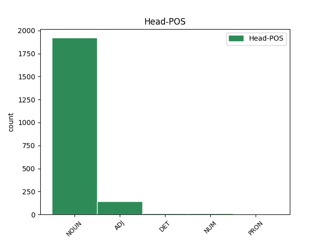
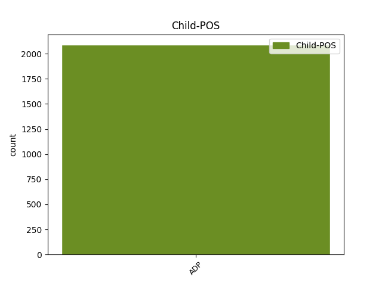

Distribution of features within this leaf



Agreement Rules sorted by frequency.
When the head token is NOUN and the dependent token is ADP.
1 و _ _ _ _ 0 _ _ _
2 تردد _ _ _ _ 0 _ _ _
3 أن _ _ _ _ 0 _ _ _
4 هم _ _ _ _ 0 _ _ _
5 جلبوا _ _ _ _ 0 _ _ _
6 مع _ _ _ _ 0 _ _ _
7 هم _ _ _ _ 0 _ _ _
8 المتفجرات _ _ _ _ 0 _ _ _
9 و _ _ _ _ 0 _ _ _
10 الذخيرة _ _ _ _ 0 _ _ _
11 لأن _ _ _ _ 0 _ _ _
12 ذلك _ _ _ _ 0 _ _ _
13 جزء _ _ _ _ 0 _ _ _
14 من _ _ _ _ 0 _ _ _
15 العادات _ _ _ _ 0 _ _ _
16 المتبعة _ _ _ _ 0 _ _ _
17 فى _ _ _ _ 0 _ _ _
18 قرية _ _ _ _ 0 _ _ _
19 هم _ _ _ _ 0 _ _ _
20 حيث _ _ _ _ 0 _ _ _
21 اعتاد _ _ _ _ 0 _ _ _
22 سكان _ _ _ _ 0 _ _ _
23 ها _ _ _ _ 0 _ _ _
24 اطلاق إِطلَاق NOUN N------S4R Case=Acc|Definite=Cons|Number=Sing 0 _ _ _
25 النار _ _ _ _ 0 _ _ _
26 فى _ _ _ _ 0 _ _ _
27 الهواء _ _ _ _ 0 _ _ _
28 خلال خِلَالَ ADP PI------4- AdpType=Prep|Case=Acc 24 udep _ Gloss=during,through|LTranslit=ḫilāla|Root=_h_l_l|Translit=ḫilāla|Vform=خِلَالَ
29 هذه _ _ _ _ 0 _ _ _
30 الاحتفالات _ _ _ _ 0 _ _ _
31 . _ _ _ _ 0 _ _ _
When the head token is ADJ and the dependent token is ADP.
1 و _ _ _ _ 0 _ _ _
2 من _ _ _ _ 0 _ _ _
3 الاهمية _ _ _ _ 0 _ _ _
4 ب _ _ _ _ 0 _ _ _
5 مكان _ _ _ _ 0 _ _ _
6 التذكير _ _ _ _ 0 _ _ _
7 ب _ _ _ _ 0 _ _ _
8 أن _ _ _ _ 0 _ _ _
9 السياسة _ _ _ _ 0 _ _ _
10 السورية _ _ _ _ 0 _ _ _
11 استطاعت _ _ _ _ 0 _ _ _
12 دوما _ _ _ _ 0 _ _ _
13 الخروج _ _ _ _ 0 _ _ _
14 من _ _ _ _ 0 _ _ _
15 مثل _ _ _ _ 0 _ _ _
16 هذه _ _ _ _ 0 _ _ _
17 الازمات _ _ _ _ 0 _ _ _
18 و _ _ _ _ 0 _ _ _
19 هي _ _ _ _ 0 _ _ _
20 تحسب _ _ _ _ 0 _ _ _
21 جيدا _ _ _ _ 0 _ _ _
22 ل _ _ _ _ 0 _ _ _
23 الخطوات _ _ _ _ 0 _ _ _
24 التي _ _ _ _ 0 _ _ _
25 تقدم _ _ _ _ 0 _ _ _
26 علي _ _ _ _ 0 _ _ _
27 ها _ _ _ _ 0 _ _ _
28 و _ _ _ _ 0 _ _ _
29 تدرس _ _ _ _ 0 _ _ _
30 ب _ _ _ _ 0 _ _ _
31 دقة _ _ _ _ 0 _ _ _
32 الخيارات _ _ _ _ 0 _ _ _
33 المطروحة مَطرُوح ADJ A-----FS4D Case=Acc|Definite=Def|Gender=Fem|Number=Sing 0 _ _ _
34 أمام أَمَامَ ADP PI------4- AdpType=Prep|Case=Acc 33 udep _ Gloss=facing,in_front_of|LTranslit=ʾamāma|Root='_m_m|Translit=ʾamāma|Vform=أَمَامَ
35 ها _ _ _ _ 0 _ _ _
36 و _ _ _ _ 0 _ _ _
37 هو _ _ _ _ 0 _ _ _
38 ما _ _ _ _ 0 _ _ _
39 يدرك _ _ _ _ 0 _ _ _
40 ه _ _ _ _ 0 _ _ _
41 باول _ _ _ _ 0 _ _ _
42 الذي _ _ _ _ 0 _ _ _
43 قال _ _ _ _ 0 _ _ _
44 في _ _ _ _ 0 _ _ _
45 مؤتمر _ _ _ _ 0 _ _ _
46 ه _ _ _ _ 0 _ _ _
47 الصحفي _ _ _ _ 0 _ _ _
48 اليوم _ _ _ _ 0 _ _ _
49 ان _ _ _ _ 0 _ _ _
50 " _ _ _ _ 0 _ _ _
51 خيار _ _ _ _ 0 _ _ _
52 استخدام _ _ _ _ 0 _ _ _
53 القوة _ _ _ _ 0 _ _ _
54 ليس _ _ _ _ 0 _ _ _
55 مطروحا _ _ _ _ 0 _ _ _
56 ضد _ _ _ _ 0 _ _ _
57 سورية _ _ _ _ 0 _ _ _
58 " _ _ _ _ 0 _ _ _
59 لٰكن _ _ _ _ 0 _ _ _
60 ه _ _ _ _ 0 _ _ _
61 استدرك _ _ _ _ 0 _ _ _
62 ب _ _ _ _ 0 _ _ _
63 ذكاء _ _ _ _ 0 _ _ _
64 حين _ _ _ _ 0 _ _ _
65 اضاف _ _ _ _ 0 _ _ _
66 الى _ _ _ _ 0 _ _ _
67 هذا _ _ _ _ 0 _ _ _
68 التأكيد _ _ _ _ 0 _ _ _
69 مفردة _ _ _ _ 0 _ _ _
70 " _ _ _ _ 0 _ _ _
71 الآن _ _ _ _ 0 _ _ _
72 " _ _ _ _ 0 _ _ _
73 التي _ _ _ _ 0 _ _ _
74 تحمل _ _ _ _ 0 _ _ _
75 دلالات _ _ _ _ 0 _ _ _
76 عميقة _ _ _ _ 0 _ _ _
77 ب _ _ _ _ 0 _ _ _
78 ما _ _ _ _ 0 _ _ _
79 يعنى _ _ _ _ 0 _ _ _
80 ان _ _ _ _ 0 _ _ _
81 الخيار _ _ _ _ 0 _ _ _
82 العسكرى _ _ _ _ 0 _ _ _
83 قد _ _ _ _ 0 _ _ _
84 يكون _ _ _ _ 0 _ _ _
85 احد _ _ _ _ 0 _ _ _
86 الاحتمالات _ _ _ _ 0 _ _ _
87 التى _ _ _ _ 0 _ _ _
88 لم _ _ _ _ 0 _ _ _
89 يحن _ _ _ _ 0 _ _ _
90 أوان _ _ _ _ 0 _ _ _
91 ها _ _ _ _ 0 _ _ _
92 بعد _ _ _ _ 0 _ _ _
93 . _ _ _ _ 0 _ _ _
When the head token is NUM and the dependent token is ADP.
1 كما _ _ _ _ 0 _ _ _
2 أن _ _ _ _ 0 _ _ _
3 تسعة تِسعَة NUM QV----M-4R Case=Acc|Definite=Cons|Gender=Masc|NumForm=Word|NumValue=3 0 _ _ _
4 اتفاقات _ _ _ _ 0 _ _ _
5 س _ _ _ _ 0 _ _ _
6 توقع _ _ _ _ 0 _ _ _
7 خلال _ _ _ _ 0 _ _ _
8 الزيارة _ _ _ _ 0 _ _ _
9 ، _ _ _ _ 0 _ _ _
10 بين بَينَ ADP PI------4- AdpType=Prep|Case=Acc 3 udep _ Gloss=among,between|LTranslit=bayna|Root=b_y_n|Translit=bayna|Vform=بَينَ
11 ها _ _ _ _ 0 _ _ _
12 اتفاق _ _ _ _ 0 _ _ _
13 ب _ _ _ _ 0 _ _ _
14 قيمة _ _ _ _ 0 _ _ _
15 15 _ _ _ _ 0 _ _ _
16 مليون _ _ _ _ 0 _ _ _
17 دولار _ _ _ _ 0 _ _ _
18 ل _ _ _ _ 0 _ _ _
19 استثمار _ _ _ _ 0 _ _ _
20 النفط _ _ _ _ 0 _ _ _
21 و _ _ _ _ 0 _ _ _
22 إنتاج _ _ _ _ 0 _ _ _
23 ه _ _ _ _ 0 _ _ _
24 في _ _ _ _ 0 _ _ _
25 المنطقة _ _ _ _ 0 _ _ _
26 الثامنة _ _ _ _ 0 _ _ _
27 قرب _ _ _ _ 0 _ _ _
28 الحدود _ _ _ _ 0 _ _ _
29 مع _ _ _ _ 0 _ _ _
30 العراق _ _ _ _ 0 _ _ _
31 . _ _ _ _ 0 _ _ _
Disagree Examples:
1 و _ _ _ _ 0 _ _ _
2 في _ _ _ _ 0 _ _ _
3 21 _ _ _ _ 0 _ _ _
4 حزيران _ _ _ _ 0 _ _ _
5 / _ _ _ _ 0 _ _ _
6 يونيو _ _ _ _ 0 _ _ _
7 ، _ _ _ _ 0 _ _ _
8 شدد _ _ _ _ 0 _ _ _
9 وزير _ _ _ _ 0 _ _ _
10 الدفاع _ _ _ _ 0 _ _ _
11 الاسباني _ _ _ _ 0 _ _ _
12 فيديريكو _ _ _ _ 0 _ _ _
13 تريو _ _ _ _ 0 _ _ _
14 على _ _ _ _ 0 _ _ _
15 ان _ _ _ _ 0 _ _ _
16 العقد _ _ _ _ 0 _ _ _
17 الموقع _ _ _ _ 0 _ _ _
18 في _ _ _ _ 0 _ _ _
19 نهاية _ _ _ _ 0 _ _ _
20 عام _ _ _ _ 0 _ _ _
21 1998 _ _ _ _ 0 _ _ _
22 بين _ _ _ _ 0 _ _ _
23 سانتا _ _ _ _ 0 _ _ _
24 بربارة _ _ _ _ 0 _ _ _
25 و _ _ _ _ 0 _ _ _
26 منتجي _ _ _ _ 0 _ _ _
27 الدبابة _ _ _ _ 0 _ _ _
28 الالمانية _ _ _ _ 0 _ _ _
29 ، _ _ _ _ 0 _ _ _
30 ك _ _ _ _ 0 _ _ _
31 روس _ _ _ _ 0 _ _ _
32 مافييه _ _ _ _ 0 _ _ _
33 ورينمينتال _ _ _ _ 0 _ _ _
34 ل _ _ _ _ 0 _ _ _
35 تصنيع _ _ _ _ 0 _ _ _
36 الدبابة _ _ _ _ 0 _ _ _
37 في _ _ _ _ 0 _ _ _
38 اسبانيا _ _ _ _ 0 _ _ _
39 و _ _ _ _ 0 _ _ _
40 إنتاج إِنتَاج NOUN N------S2R Case=Gen|Definite=Cons|Number=Sing 0 _ _ _
41 235 _ _ _ _ 0 _ _ _
42 دبابة _ _ _ _ 0 _ _ _
43 ليوبارد _ _ _ _ 0 _ _ _
44 2 _ _ _ _ 0 _ _ _
45 خلال خِلَالَ ADP PI------4- AdpType=Prep|Case=Acc 40 udep _ Gloss=during,through|LTranslit=ḫilāla|Root=_h_l_l|Translit=ḫilāla|Vform=خِلَالَ
46 عشر _ _ _ _ 0 _ _ _
47 سنوات _ _ _ _ 0 _ _ _
48 ، _ _ _ _ 0 _ _ _
49 يتضمن _ _ _ _ 0 _ _ _
50 بندا _ _ _ _ 0 _ _ _
51 ل _ _ _ _ 0 _ _ _
52 حماية _ _ _ _ 0 _ _ _
53 التكنولوجيا _ _ _ _ 0 _ _ _
54 الالمانية _ _ _ _ 0 _ _ _
55 و _ _ _ _ 0 _ _ _
56 يجب _ _ _ _ 0 _ _ _
57 في _ _ _ _ 0 _ _ _
58 " _ _ _ _ 0 _ _ _
59 جميع _ _ _ _ 0 _ _ _
60 الاحوال _ _ _ _ 0 _ _ _
61 " _ _ _ _ 0 _ _ _
62 ان _ _ _ _ 0 _ _ _
63 تحترم _ _ _ _ 0 _ _ _
64 ه _ _ _ _ 0 _ _ _
65 شركة _ _ _ _ 0 _ _ _
66 " _ _ _ _ 0 _ _ _
67 جنرال _ _ _ _ 0 _ _ _
68 ديناميكس _ _ _ _ 0 _ _ _
69 " _ _ _ _ 0 _ _ _
70 الاميركية _ _ _ _ 0 _ _ _
71 . _ _ _ _ 0 _ _ _
1 لاغوس _ _ _ _ 0 _ _ _
2 15 _ _ _ _ 0 _ _ _
3 - _ _ _ _ 0 _ _ _
4 7 _ _ _ _ 0 _ _ _
5 ( _ _ _ _ 0 _ _ _
6 اف _ _ _ _ 0 _ _ _
7 ب _ _ _ _ 0 _ _ _
8 ) _ _ _ _ 0 _ _ _
9 - _ _ _ _ 0 _ _ _
10 ذكرت _ _ _ _ 0 _ _ _
11 الشرطة _ _ _ _ 0 _ _ _
12 النيجيرية _ _ _ _ 0 _ _ _
13 اليوم _ _ _ _ 0 _ _ _
14 السبت _ _ _ _ 0 _ _ _
15 ان _ _ _ _ 0 _ _ _
16 ما _ _ _ _ 0 _ _ _
17 لا _ _ _ _ 0 _ _ _
18 يقل _ _ _ _ 0 _ _ _
19 عن _ _ _ _ 0 _ _ _
20 12 _ _ _ _ 0 _ _ _
21 شخصا _ _ _ _ 0 _ _ _
22 قتلوا _ _ _ _ 0 _ _ _
23 في _ _ _ _ 0 _ _ _
24 مواجهات مُوَاجَهَة NOUN N------P2I Case=Gen|Definite=Ind|Number=Plur 0 _ _ _
25 استمرت _ _ _ _ 0 _ _ _
26 يومين _ _ _ _ 0 _ _ _
27 في _ _ _ _ 0 _ _ _
28 سوق _ _ _ _ 0 _ _ _
29 في _ _ _ _ 0 _ _ _
30 لاغوس _ _ _ _ 0 _ _ _
31 بين بَينَ ADP PI------4- AdpType=Prep|Case=Acc 24 udep _ Gloss=among,between|LTranslit=bayna|Root=b_y_n|Translit=bayna|Vform=بَينَ
32 تجار _ _ _ _ 0 _ _ _
33 و _ _ _ _ 0 _ _ _
34 زقاقيين _ _ _ _ 0 _ _ _
35 . _ _ _ _ 0 _ _ _
1 1995 _ _ _ _ 0 _ _ _
2 - _ _ _ _ 0 _ _ _
3 وزير _ _ _ _ 0 _ _ _
4 الخارجية _ _ _ _ 0 _ _ _
5 السعودي _ _ _ _ 0 _ _ _
6 الامير _ _ _ _ 0 _ _ _
7 سعود _ _ _ _ 0 _ _ _
8 الفيصل _ _ _ _ 0 _ _ _
9 يعلن _ _ _ _ 0 _ _ _
10 تطبيع _ _ _ _ 0 _ _ _
11 العلاقات عَلَاقَة NOUN N------P2D Case=Gen|Definite=Def|Number=Plur 0 _ _ _
12 الدبلوماسية _ _ _ _ 0 _ _ _
13 بين بَينَ ADP PI------4- AdpType=Prep|Case=Acc 11 udep _ Gloss=among,between|LTranslit=bayna|Root=b_y_n|Translit=bayna|Vform=بَينَ
14 السعودية _ _ _ _ 0 _ _ _
15 و _ _ _ _ 0 _ _ _
16 الأردن _ _ _ _ 0 _ _ _
17 بعد _ _ _ _ 0 _ _ _
18 قطيعة _ _ _ _ 0 _ _ _
19 دامت _ _ _ _ 0 _ _ _
20 خمس _ _ _ _ 0 _ _ _
21 سنوات _ _ _ _ 0 _ _ _
22 . _ _ _ _ 0 _ _ _
1 1945 _ _ _ _ 0 _ _ _
2 - _ _ _ _ 0 _ _ _
3 افتتاح _ _ _ _ 0 _ _ _
4 مؤتمر مُؤتَمَر NOUN N------S2R Case=Gen|Definite=Cons|Number=Sing 0 _ _ _
5 بوتسدام _ _ _ _ 0 _ _ _
6 بين بَينَ ADP PI------4- AdpType=Prep|Case=Acc 4 udep _ Gloss=among,between|LTranslit=bayna|Root=b_y_n|Translit=bayna|Vform=بَينَ
7 قادة _ _ _ _ 0 _ _ _
8 الاتحاد _ _ _ _ 0 _ _ _
9 السوفياتي _ _ _ _ 0 _ _ _
10 و _ _ _ _ 0 _ _ _
11 بريطانيا _ _ _ _ 0 _ _ _
12 و _ _ _ _ 0 _ _ _
13 الولايات _ _ _ _ 0 _ _ _
14 المتحدة _ _ _ _ 0 _ _ _
15 الذي _ _ _ _ 0 _ _ _
16 رسم _ _ _ _ 0 _ _ _
17 حدود _ _ _ _ 0 _ _ _
18 الدول _ _ _ _ 0 _ _ _
19 الاوروبية _ _ _ _ 0 _ _ _
20 بعد _ _ _ _ 0 _ _ _
21 الحرب _ _ _ _ 0 _ _ _
22 العالمية _ _ _ _ 0 _ _ _
23 الثانية _ _ _ _ 0 _ _ _
24 . _ _ _ _ 0 _ _ _
1 1973 _ _ _ _ 0 _ _ _
2 - _ _ _ _ 0 _ _ _
3 توقيع _ _ _ _ 0 _ _ _
4 " _ _ _ _ 0 _ _ _
5 ميثاق مِيثَاق NOUN N------S2I Case=Gen|Definite=Ind|Number=Sing 0 _ _ _
6 ل _ _ _ _ 0 _ _ _
7 العمل _ _ _ _ 0 _ _ _
8 الوطني _ _ _ _ 0 _ _ _
9 " _ _ _ _ 0 _ _ _
10 بين بَينَ ADP PI------4- AdpType=Prep|Case=Acc 5 udep _ Gloss=among,between|LTranslit=bayna|Root=b_y_n|Translit=bayna|Vform=بَينَ
11 حزب _ _ _ _ 0 _ _ _
12 البعث _ _ _ _ 0 _ _ _
13 الحاكم _ _ _ _ 0 _ _ _
14 في _ _ _ _ 0 _ _ _
15 العراق _ _ _ _ 0 _ _ _
16 و _ _ _ _ 0 _ _ _
17 الحزب _ _ _ _ 0 _ _ _
18 الشيوعي _ _ _ _ 0 _ _ _
19 العراقي _ _ _ _ 0 _ _ _
20 . _ _ _ _ 0 _ _ _